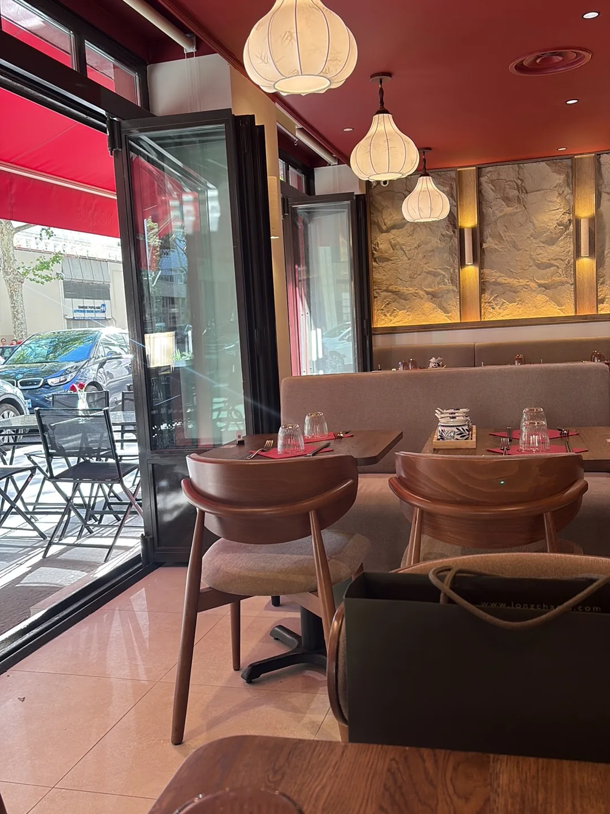
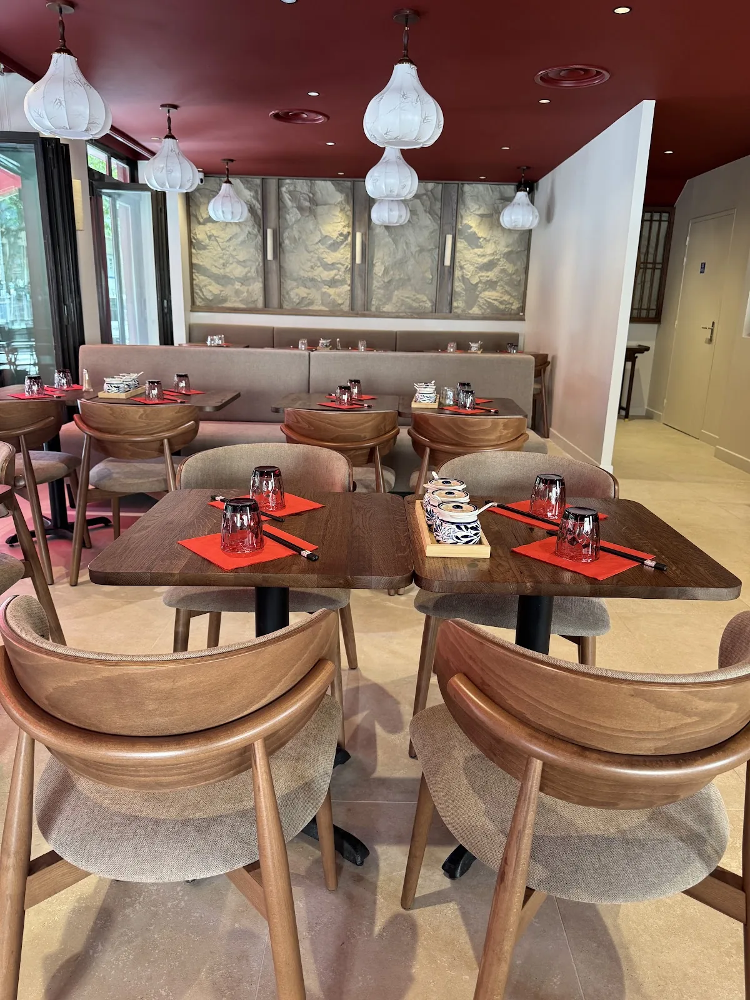
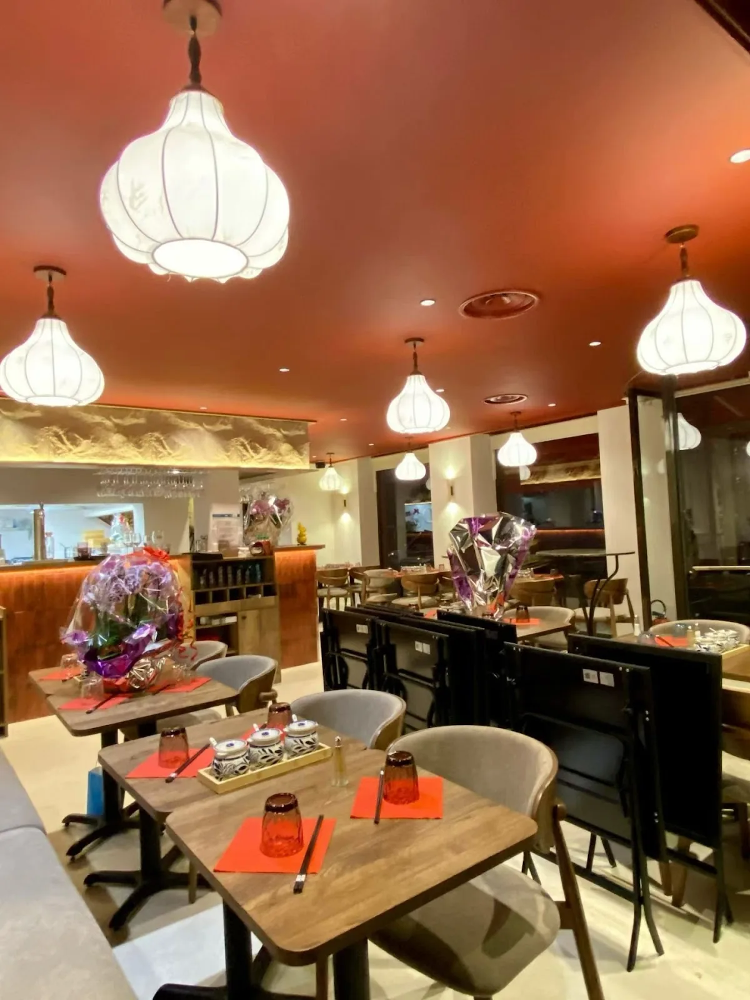

02 niveaux
Un espace développé sur deux étages, avec plusieurs ambiances selon l’heure et le moment de la journée.
AMA NOODLE s’inspire d’une cuisine familiale transmise de génération en génération. L’idée n’est pas seulement de servir un bol de nouilles, mais de retrouver ce geste patient qui transforme des ingrédients simples en quelque chose de profondément réconfortant.
Des recettes transmises de mains en mains, des bouillons mijotés lentement, des nouilles qui rappellent les repas généreux et les plats que l’on redemande encore. C’est cette émotion simple que le restaurant cherche à faire vivre à Lyon.

Le site de référence met en avant un restaurant réparti sur deux niveaux, pensé pour recevoir aussi bien une clientèle de passage qu’un déjeuner entre collègues dans le quartier de la Part-Dieu.
Un espace développé sur deux étages, avec plusieurs ambiances selon l’heure et le moment de la journée.
Une capacité d’accueil confortable pour venir à deux, entre amis ou dans un cadre plus collectif.
Une adresse pratique à proximité de la gare Part-Dieu et des bureaux du quartier.
64 avis visibles au moment de la création de cette version, avec une satisfaction très élevée.



« Un excellent moment ! Le service est accueillant et rapide. L’ambiance est conviviale. Côté cuisine, délicieux : des plats savoureux et bien assaisonnés. On sent la qualité des produits. Je recommande sans hésiter ! »
Matteo Baruzzi — 24 juin 2026« Excellente découverte ! Les noodles sont excellentes, préparées avec des ingrédients de qualité et beaucoup de soin. Les saveurs sont au rendez-vous et les portions sont généreuses. »
Ixus — 19 juin 2026« Une carte assez restreinte mais un service impeccable et des plats parfaitement réalisés. Une option végétarienne avec du tofu serait grandement appréciée :) »
Amandine Labroy — 13 juillet 2026« Soupe Phô Bœuf commandée ce soir. Service plutôt rapide, très copieux, rapport qualité quantité prix plus que correct. »
Thibault S. — 13 juillet 2026